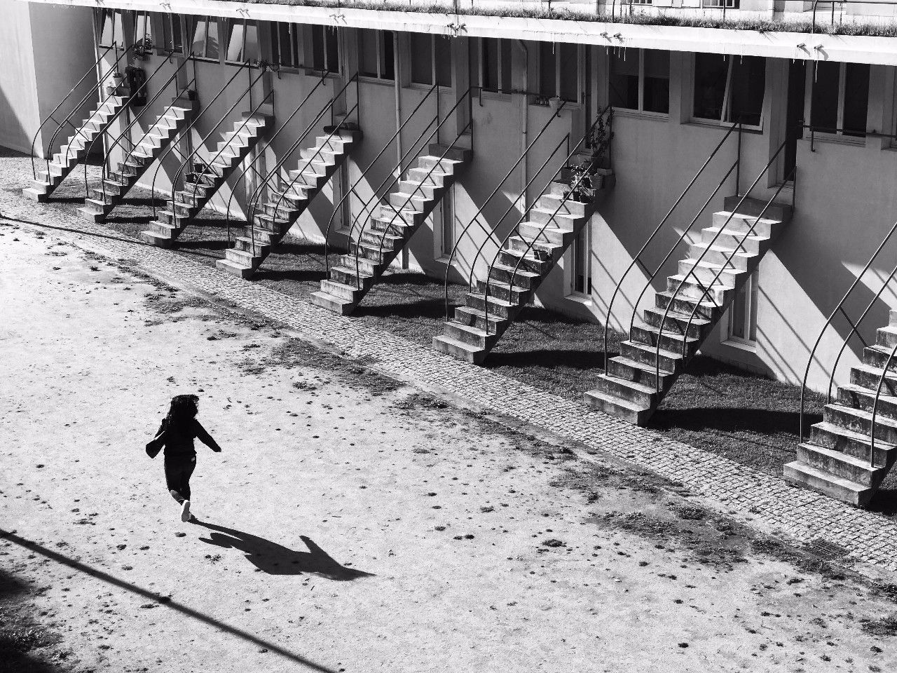

非常不喜欢一句关于摄影的鸡汤：“快门凝固了时间，记录了我们生活的感动一瞬”。
这几乎将一张照片限死在了“二维平面艺术”的定义中。
我们的生活场景才不会像一张照片那么简单，它有声音、有气味、有温度，是三维的空间，存在着时间的流逝。摄影技术将我们所真实感受的多维的世界，“拍平”在一张相纸或我们手机的屏幕中了。
我认为摄影只是媒介，真正需要表达的是场景以及事件。这其中，如果能在方寸之间表现出时间流动的感觉，那也许会成为一种质的提升。
拍照才不是“一瞬间”的事情。

我们不能像观看舞台剧一般真的在一张照片中真正看到运动着的场景，“剧场”在我们的脑海中。这不是一句漂亮的空话。人脑会根据自己已有的经验，自行“脑补”出一个完整的形状，一个完整的动作，甚至是一系列完整的情节。我们正是根据这些“脑补”的内容，生成了一系列丰富精彩的观赏体验。
这样说来可能有些抽象。我举个栗子。曾经有个小恶作剧流传很广，相信很多朋友都见过：
研表究明，汉字的序顺并不定一能影阅响读，比如当你完看这句话后之，才发这现里的字全是都乱的。
之所以大家在其中语序有些问题的情况下，也能顺利理解这句话的意思，就是因为我们人都有一种自动“完形”心理，读到这些信息的时候，我们会下意识地调动自己的语言库，形成对它的理解。
一张照片亦然。
我们看不到泡泡从生成到破灭的过程，但是我们有这样的生活经验，知道它马上会破灭；我们看不到男孩从哪儿跑来将要跑到哪里去，但是从他夸张的动作几乎可以想象到他下一秒将要扑向面前的泡泡——总之，现实生活中是有一根时间轴的，一张有活力的照片能引导我们感受这根时间轴。这是一根情节发生的轴。
每一张照片背后都隐藏着一根时间轴。时间感，就是尽量让观众通过看照片能够感知时间轴的存在。
运动是时间感的灵魂。
我认为产生时间感最关键的点在于，照片上的视觉语言足以让观者脑补拍摄前后发生的事件。
通常我们从这几个方向入手。
这是最简单粗暴用照片表现时间感的方法了，就是直接用长曝光将连续流动的东西拍摄下来，造成不同时间的场景堆积在一起的感觉。水幕连续的瀑布、云雾的流动、车灯拖曳的轨迹等画面效果都是常见的表现对象。
用手机慢门slow shuter长曝光拍摄的旋转木马就是很好的例子。
我们并不是很乐于用太长的曝光。“稍长一点的曝光”比如1-2秒，能够表现局部物体的运动趋势，点到为止即可。如柏林电视塔下的人和快速移动的云。
又如莫斯科地铁站的乘客和疾驰而过的列车。
又如莫斯科火车站走过的中年妇女。
这些照片之所以给人以时间感，是他们因为通过长曝光将人和物体的运动“堆积”在了一起，给我们造成了时间进程的错觉。
不平衡算是一种对时间感表达的进阶了。
其实人是一种很矛盾的动物：潜意识里我们都会“希望”所有东西是平衡的，又或期待达到一种稳态，但我们又常被不平衡撩拨起兴趣。

在不平衡到稳态之间，藏着一个运动的过程，这便是不平衡带来的时间进程感。
非见得要用长曝光堆积时间或以不平衡才能撩拨起进程感，许多在画面上很稳定，却通过情节制造了时间感。
年轻的妈妈牵着自己的孩子走过老街，孩子的注意力被自己拖长的影子吸引，下一秒他也许会去踩自己的影子？

出租车内，司机一个动作让我们感觉到右转弯的趋势，街角的逆光强化了这种感觉：下一秒我们就要跨过铁路啦。
其实不管是以什么方式，只要是激发了大家心里的“完形效应”（特别是对运动状态的完形和对情节的预示），就容易产生时间感。
手机照相功能一般都是自动控制曝光时间的，若要延长曝光时间达到时间堆积的效果，可从两个方面入手。第一是增强曝光，使系统计算的曝光时间延长；第二是用第三方app如slow shuter 可以延长曝光时间。
依然可以用“建立一个场景，然后等待事件发生”这样的方式，简化环境和主体之间的关系。
不建议太长时间的曝光，通常1-2秒的曝光会让画面动静有致。长时间曝光“时间感”会被无限放大，但未免有些直白和生硬。多尝试通过情节来展现故事的进程。
最后想说：不建议大家拍照摄影的时候以“时间感”为目的——它真的太抽象。且，对于日常即兴式的拍照来说，以这些分析话语为目标反倒会成为束缚。
50人觉得很赞！